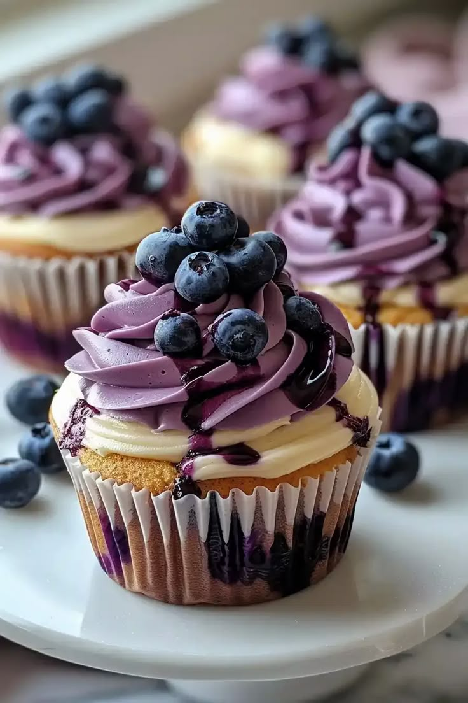

Adaora's Recipe Book
Delicious Pancakes

Ingredients
- 1 ½ cups all-purpose flour
- 3 ½ tsp baking powder
- 1 tsp salt
- 1 tbsp white sugar
- 1 ¼ cups milk
- 1 egg
- 3 tbsp melted butter
- 1 cup fresh blueberries
- 1 cup of fresh strawberries
Instructions
- In a bowl, sift together flour, baking powder, salt, and sugar.
- Make a well in the center and pour in milk, egg, and melted butter; mix until smooth.
- Fold in blueberries gently.
- Heat a griddle or pan over medium heat and grease lightly.
- Pour batter onto the griddle and cook until bubbles appear.
- Flip and cook until browned on the other side.
- Serve warm with syrup or toppings of choice.
Blueberries Cupcakes

Ingredients
- 2 cups all-purpose flour
- ½ teaspoon baking powder
- ½ teaspoon salt
- 6 tablespoons butter, softened
- 1 ¼ cups white sugar
- 2 large eggs
- ½ cup milk
- 1 pint fresh blueberries
Toppings
- 2 teaspoons white sugar
- 1 pinch ground cinnamon
Instructions
- Preheat the oven to 375 degrees F (190 degrees C). Line a 12-cup muffin tin with paper liners.
- Sift flour, baking powder, and salt together in a bowl.
- Cream sugar and butter in a large bowl with an electric mixer. Add eggs, one at a time, beating well after each addition. Add flour mixture in 2 batches, alternating with milk, beating batter briefly after each addition.
- Crush 1/2 of the blueberries with a fork in a small bowl; mix into the batter. Gently fold remaining blueberries into the batter and fill the prepared muffin cups 3/4 full.
- Stir sugar and cinnamon for topping together in a small bowl; sprinkle over cupcakes.
- Bake in the preheated oven until tops spring back when lightly pressed, about 30 minutes. Cool in the tin for 30 minutes. Transfer to a wire rack to cool completely.